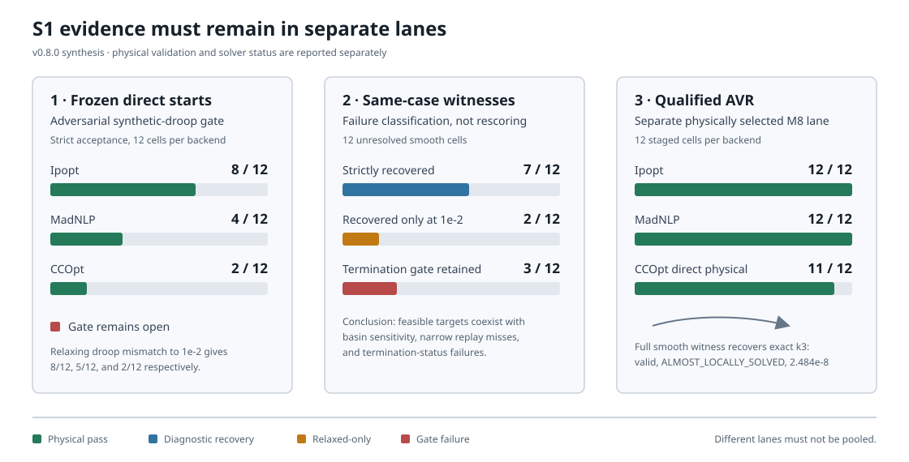

S1 current decision report
Decision: the frozen S1 reliability gate remains open. The equipment and reactive-control equations have substantial independent support, and many failed cells have validated same-case witnesses, but the declared direct-start policy is not reliable across solvers, starts, networks, and load levels. M8's qualified AVR lane is release evidence for a different, physically selected controller policy; it does not overwrite or rescore the frozen synthetic-droop matrix.
This page is the authoritative synthesis as of v0.8.0. The other S1 pages are the chronological audit trail and retain the counts known at each checkpoint.

Scope separation
| Lane | Question answered | May change the frozen score? |
|---|---|---|
| Frozen synthetic-droop matrix | Does the declared direct-start policy reliably solve the unchanged adversarial workload? | Yes; this is the gate |
| Same-case witness diagnostic | Does a failed target admit a validated solution under the same equations, bounds, and load? | No; it classifies the failure |
Relaxed 1e-2 re-score | Is rejection caused only by the exact-droop 1e-5 gate? | No; diagnostic only |
| Qualified AVR lane | Do explicitly selected physical control semantics work on the public cases? | No; separate M8 evidence |
The distinction is essential. A witness can refute an infeasibility inference without making the prescribed start reliable. Likewise, a physically qualified AVR model can pass without rehabilitating an anchor-derived synthetic droop assignment.
Acceptance contract
A cell passes only when all applicable checks pass. Solver status alone is not acceptance, and a complementarity product is not a substitute for exact physical replay.
| Gate | Frozen requirement |
|---|---|
| Solver | Accepted termination and a usable primal point |
| AC physics | Independently reconstructed active/reactive balance within the declared tolerance |
| Network and equipment | Voltage, generator, thermal, tap, and shunt policy limits |
| Reactive control | Exact droop/AVR regime replay; frozen droop mismatch at most 1e-5 pu |
| Budget | Declared per-attempt and restart allowance; diagnostic overruns remain separate |
| Provenance | Stable case, load, controller policy, start, backend, smoothing, and context hash |
The user-requested 1e-2 mismatch view is retained as a re-score. It changes only the exact-droop threshold; it does not waive solver, balance, policy, or equipment checks.
Frozen direct-start scorecard
All three rows cover the same 12 public cells: IEEE 118/300, nominal/+5% demand, and anchor/flat-low/flat-high starts. Ipopt and MadNLP use the frozen smooth explicit-droop model and one-reset policy. CCOpt uses exact complementarity and its native direct budget, so it is a third solver family, not a like-for-like smooth-backend ranking.
| Backend | Formulation and budget | Strict 1e-5 | Relaxed 1e-2 | Main rejection mechanism |
|---|---|---|---|---|
| Ipopt | Smooth; one reset, 2000 iterations / 120 s total | 8/12 | 8/12 | Iteration/basin failures; two witness reruns narrowly miss strict droop replay |
| MadNLP | Smooth; one reset, 2000 iterations / 120 s total | 4/12 | 5/12 | SLOW_PROGRESS, iteration, and basin sensitivity |
| CCOpt | Exact; one direct solve, 1000 inner iterations / 60 s | 2/12 | 2/12 | Rejected cells also fail termination or AC balance |
The strict direct score is therefore 14/36 across separately declared solver lanes, not a pooled success probability. Starts and cells are deliberately adversarial and are not samples from an operational distribution.
Same-case witness diagnostic
The 12 unresolved smooth cells were rerun from a validated witness for the same network and load. The seed contains the full physical decision—AC state, tap, shunt, and droop settings—while equations, bounds, objective, smoothing, validation, and restart budget remain unchanged.
| Outcome class | Cells | Interpretation |
|---|---|---|
| Strictly recovered | 7/12 | Direct failure was basin/start sensitive |
Recovered only under 1e-2 droop re-score | 2/12 | LOCALLY_SOLVED, raw mismatch about 1.122e-5; strict gate remains failed |
Not recovered because of SLOW_PROGRESS | 3/12 | Balance and droop residuals are near machine precision, but the declared termination gate remains failed |
Thus the witness diagnostic reaches 7/12 strictly and 9/12 under the relaxed droop-only view. It establishes feasible-but-not-reliably-reached targets and separates physical residual quality from termination robustness.
Qualified AVR lane
M8 replaces synthetic controller semantics only in a separately labelled lane. Candidates are selected by normalized bidirectional raw-Q headroom, at most one generator per bus, with raw voltage at least 1e-5 inside its limits. AVR setpoints come from the independently validated FreeQ operating point. Joint design uses a fixed first-transformer ±1% tap policy and staged k1 → k2 → k3 activation.
| Backend | Networks / loads | Staged physical validation | Termination detail |
|---|---|---|---|
| Ipopt | IEEE 118/300 at 1.00 and 1.01 | 12/12 | 12/12 LOCALLY_SOLVED |
| MadNLP | IEEE 118/300 at 1.00 and 1.01 | 12/12 | 12/12 LOCALLY_SOLVED |
| CCOpt direct | IEEE 118/300 at 1.00 and 1.01 | 11/12 | 7/12 LOCALLY_SOLVED; four valid ALMOST_LOCALLY_SOLVED; one invalid stressed-k3 result |
The sole direct exact failure is IEEE-300 at load 1.01, k3. Seeding a fresh exact solve from the full smooth k3 witness recovers a physically valid ALMOST_LOCALLY_SOLVED point. Its maximum complementarity residual is 2.484e-8, and its tap differs from the smooth seed by about 5.18e-9. This classifies the direct LOCALLY_INFEASIBLE result as basin-sensitive solver behavior, not evidence that the exact equations are infeasible. The cross-seed is diagnostic and does not change the 11/12 direct score.
Causal findings
| Hypothesis | Evidence | Current judgment |
|---|---|---|
| Transformer equation error | Independent PowerModels-style terminal-flow oracle checks across tap ratios and phase shifts | Not supported |
| Shunt equation is the dominant cause | Shunt-only and one-droop/one-shunt isolation cells pass; raw and shunt-only public slices are materially stronger | Not supported |
| Public source cases are generally infeasible | Valid raw and controlled witnesses exist over the tested envelopes | Not supported for the qualified envelopes |
| Every frozen failure is a residual-threshold artifact | Relaxing only droop mismatch leaves most rejected cells unchanged | Rejected |
| Solver basin/start sensitivity is material | Same-case witnesses recover 7 strict cells; controller-count and exact cross-seed results are non-monotone | Supported |
| Termination and physical validity are interchangeable | Near-machine-precision residual points can retain SLOW_PROGRESS; valid CCOpt points can be ALMOST_LOCALLY_SOLVED | Rejected |
| Frozen synthetic controls are representative hardware | Controllers are anchor-derived overlays rather than measured plant assignments | Rejected; retain as adversarial evidence |
The strongest conclusion is not that one solver is “best.” It is that the current nonconvex formulations expose multiple failure classes: basin-sensitive paths, termination-status robustness, narrow exact-replay misses, and genuinely poor nonconverged iterates. Those classes require different remedies.
Evidence provenance
| Evidence | Human-readable record | Machine-readable record |
|---|---|---|
| Frozen three-solver direct score | artifacts/s1_three_solver_scorecard/report.md | artifacts/s1_three_solver_scorecard/summary.json |
| Same-case witness reruns | artifacts/s1_frozen_witness_seed_matrix/report.md | artifacts/s1_frozen_witness_seed_matrix/summary.json |
1e-2 witness re-score | artifacts/s1_witness_seed_tolerance_1e-2/report.md | artifacts/s1_witness_seed_tolerance_1e-2/summary.json |
| Incremental control isolation | artifacts/s1_incremental_controls/report.md | Regenerate the large raw ledger with examples/s1_incremental_controls.jl |
| Controller-5 diagnostic | artifacts/s1_incremental_control5/report.md | Regenerate the large raw ledger with examples/s1_controller5_witness_audit.jl |
| Qualified AVR envelope | artifacts/avr_ieee_qualification/README.md | Per-cell JSON files in the same directory |
Download the compact v0.8.0 scorecard.
The compact reports and scorecards are the intended review surface. Large raw iteration traces and multi-megabyte per-attempt ledgers are reproducible working evidence and are intentionally excluded from the release tree; failed outcomes remain represented in the committed reports.
Limitations and decision
- The public overlays are synthetic and do not establish utility-grade plant assignments, discrete implementability, or probabilistic reliability.
- AC OPF remains nonconvex. A validated witness establishes local feasibility, not global optimality or uniqueness.
- The 1.00/1.01 AVR envelope and nominal/+5% frozen envelope answer different questions and must not be merged.
- Runtime measurements include compilation and machine-specific effects unless a report explicitly states otherwise.
- M8 qualification is base-case work. It does not authorize independent scenario-specific tap, shunt, or voltage targets in SCOPF.
The project may proceed to M9 because the physical control semantics and failure classes are now explicit, but M9 must preserve this evidence split. Taps and shunts are preventive by default; corrective movement requires an explicit response-time policy. Droop and AVR may respond automatically only through declared scenario coupling. S1 remains open until an unchanged remedy improves the complete frozen matrix without weakening its acceptance contract.
Reproduction
julia --project=. examples/s1_three_solver_scorecard.jl
julia --project=. examples/s1_frozen_witness_seed_matrix.jl
julia --project=. examples/s1_witness_seed_tolerance_rescore.jl
julia --project=. examples/avr_ieee_qualification.jl 118 ipopt 3 1.0,1.01 joint_staged
julia --project=. examples/avr_ieee_qualification.jl 300 ccopt 3 1.01 joint_cross_seedHistorical experimental pages remain useful for method detail, but their checkpoint counts should not be quoted as the current aggregate status.